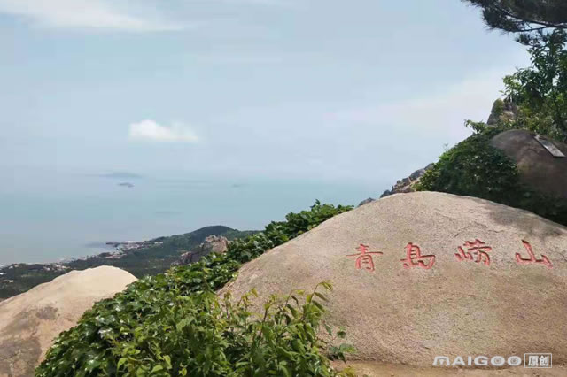
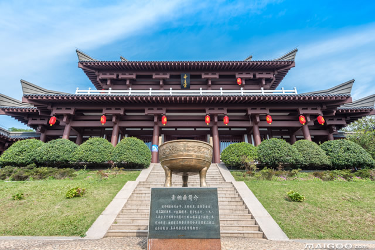
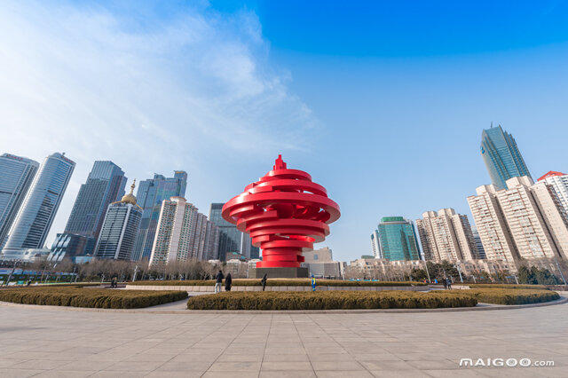
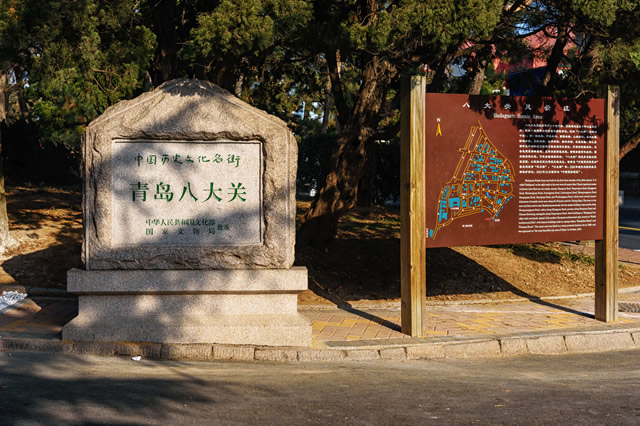
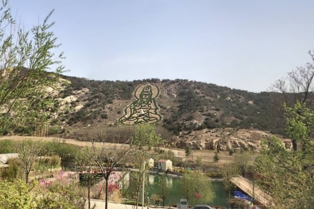
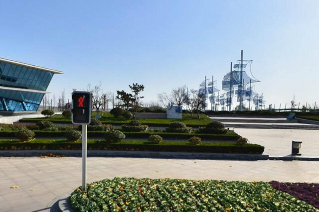

青岛是国家历史文化名城、中国道教发祥地。因树木繁多，四季常青而得名。1891年清政府驻兵建制，青岛是2008北京奥运会和第13届残奥会帆船比赛举办城市，是中国帆船之都，亚洲最佳航海城，世界啤酒之城、联合国“电影之都” 、全国首批沿海开放城市、全国文明城市、中国最具幸福感城市。被誉为“东方瑞士” 、中国品牌之都。2020年9月2日，被交通运输部评为国家公交都市建设示范城市。
 崂山古称牢山、劳山。坐落在山东半岛的东南，西靠青岛，东南两面濒临黄海。面积386平方公里，崂顶巨峰，海拔1，133米。既是中国道教名山，又是著名的避暑游览胜地。崂山景区包括太清宫、太平宫、北九水、华楼宫、鹤山和崂顶巨峰等景区与景点。奇峰怪石，满山遍布，如狮子峰、绵羊石等。人称峻山的石峰是“天然的花岗岩群雕”。
 青岛海滨风景区位于青岛市区南部沿海一线，东西长约25公里，南北宽约3公里。陆地包括青岛山、信号山、观象山、太平山、八关山、小鱼山及南侧区域。海域则有团岛湾、青岛湾、汇泉湾、太平湾、浮山湾等海域及所含岛、礁、海滩等。主要风景游览区有八大关景区、八大峡景区、太平山景区和太平角景区。主要风景点有栈桥、鲁迅公园、小青岛、小鱼山、百花苑、汇泉广场、五四广场、音乐广场、燕儿岛公园、第一、二、三、六海水浴场及海滨观光大道――东海路、香港路等。
 青岛栈桥是青岛海滨风景区的景点之一，是国务院于1982年首批公布的国家级风景名胜区，也是首批国家AAAA级旅游景区。青岛栈桥位于游人如织的青岛中山路南端，桥身从海岸探入如弯月般的青岛湾深处。桥身供游人参观并在此停靠旅游船，由此乘船可看海上青岛。青岛栈桥始建于清光绪十八年(1892年)，是青岛最早的军事专用人工码头建筑，现在是青岛的重要标志性建筑物和著名风景游览点。青岛栈桥全长440米，宽8米，钢混结构。桥南端筑半圆形防波堤，堤内建有民族形式的两层八角楼，名“回澜阁”，游人伫立阁旁，欣赏层层巨浪涌来，“飞阁回澜”被誉为“青岛十景”之一。